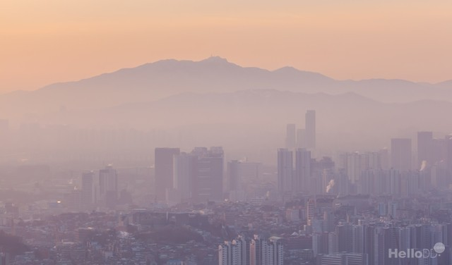

HTML 미세먼지
HTML 첫번째 연습 미세먼지
미세먼지(微細-, particulate matter, PM, suspended particulate matter, SPM, atmospheric aerosol particles, atmospheric particulate matter ) 또는 분진(粉塵)은 눈에 보이지 않을 정도로 입자가 작은 먼지이다.
아황산가스, 질소 산화물, 납, 오존, 일산화탄소 등을 포함하는 대기오염 물질로 자동차, 공장 등에서 발생하여 대기 중 장기간 떠다니는 입경 10μm 이하의 미세한 먼지이며, PM10이라고도 한다.
입자가 2.5μm 이하인 경우는 PM 2.5라고 쓰며 '초미세먼지' 또는 '극미세 먼지' 라고도 부른다. 학술적으로는 에어로졸 (aerosol)이라고 부른다.
미세먼지(fine particles)는 부유 분진(Suspended particles), 입자상물질(Particulate matter) 등으로도 불리며 명칭에 따라 약간씩 다른 의미가 있다.
입자상물질은 지름이 100μm에서 10nm 정도이며, 이보다 지름이 크면 중력으로 인해 대기 중 체류 시간이 아주 짧다. 미세먼지좀 줄입시다.
